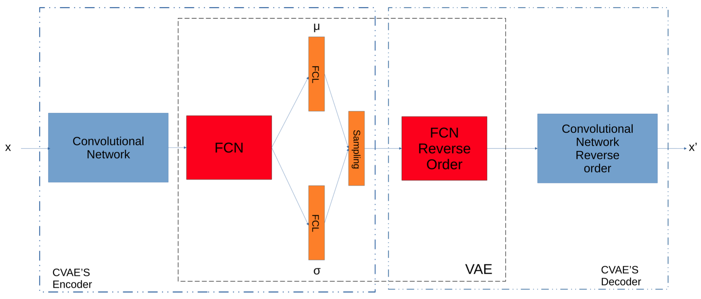

For the extended bibliography check my google scolar profile

The problem of data clustering is one of the most fundamental and well studied problems of unsupervised learning. Image clustering, refers to one of the most challenging specifications of clustering, concerning image data. Thankfully, the emerging Deep Neural Networks, and in particular Deep Autoencoders lead to the automation of image clustering, which until recently, was time consuming and labor intensive. How- ever, the effect of the consideration of local structure during feature extraction from a Variational Autoencoder on clustering, is still an unstudied subject in the literature, while simultaneously constitute a base- line approach for supervised learning (Convolutional Neural Networks). For this reason, the methodology proposed in this paper, is composed from a Variational Autoencoder (VAE) surrounded by a convolutional network in a symmetric way. The resulting embedded image data are fed to various established clustering algorithms to examine clustering performance. In addition, we propose a modification of this approach, able to reduce complexity while achieving similar or even better clustering performance. Finally, we investigate the combination of VAE’s produced embedding and manifold learning for image clustering. The extensive experimental analysis, verified the importance of the proposed methodology, exposing the potential for further developments. (Nellas, Tasoulis, and Plagianakos (2021))
We explore how Random Projections can be used as an Approximate method for Projection Pursuit Clustering in high dimensional data. Traditional data transformations such as PCA for dimensionality reduction have been shown to be beneficial in clustering. However, their objective is not always relevant to the cluster structure producing undesirable results. On the other hand, Projection Pursuit methods present promising results in finding different “interesting” directions while being easily modified, though they came with high computational costs. In an attempt to provide a lightweight and simplified approach for Projection Pursuit clustering, we designed and implemented the Random Line Approximation Clustering (RLAC), a hierarchical divisive clustering algorithm that incorporates attributes from the Random Projection method. (Barbas, Vrahatis, and Tasoulis (2021))
Copyright © 2022, Inc. All rights reserved.